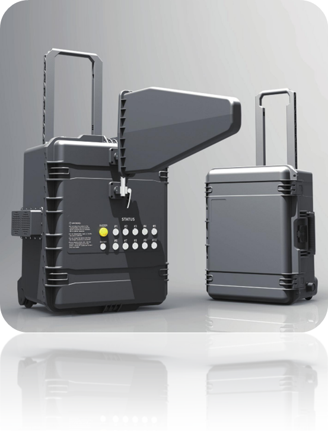

RCIED JAMMER
- Block mobile communication including cellular, Wi-Fi, Bluetooth, etc.
- Rugged and compact design of the device
- Built-in-battery type providing operation for at least 1 hour as full power
- External battery enabling uninterrupted operation for at least 1 hour as full power
- Specific signal source per band for maximum jamming efficiency
- Easy and fast installation of broadband omni and directional antennas
- Remote control available (optional)
COMMUNICATION JAMMER
- Block signal particularity for cellular communication
- Specific signal source per band for maximum jamming efficiency
- Output power level control available up to 2 level
- Configured with 5 patch antennas
- Remote control available (optional)
APPLICATION AREAS
